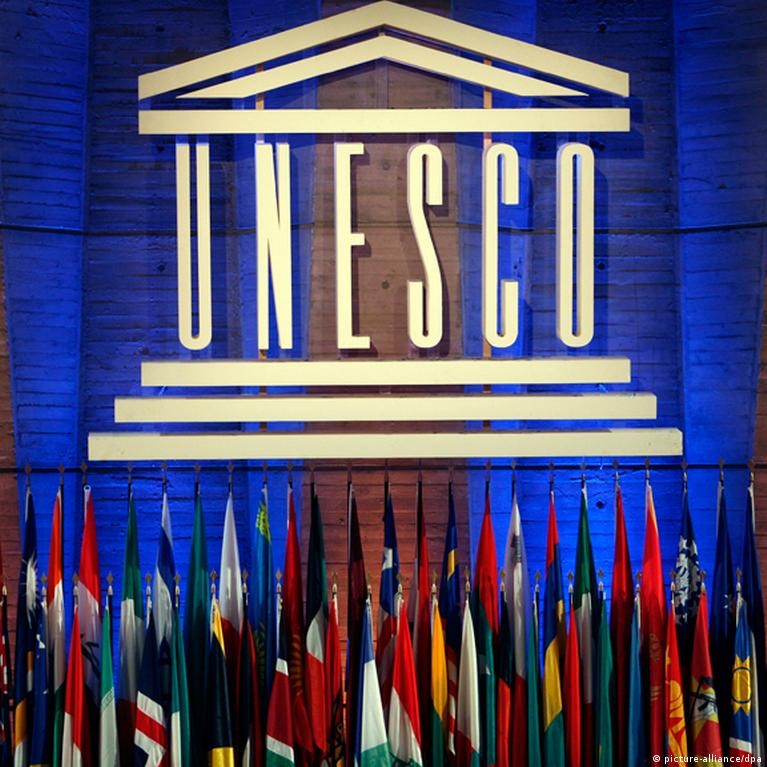

| Home | Sites to visit in India | Tourism in India | Types of Tourism in India | New Seven Wonders Of The World | UNESCO |
|
| UNESCO in brief |
What is UNESCO ?UNESCO is the United Nations Educational, Scientific and Cultural Organization. It contributes to peace and security by promoting international cooperation in education, sciences, culture, communication and information. UNESCO promotes knowledge sharing and the free flow of ideas to accelerate mutual understanding and a more perfect knowledge of each other's lives. UNESCO's programmes contribute to the achievement of the Sustainable Development Goals defined in the 2030 Agenda, adopted by the UN General Assembly in 2015. |
|  |
UNESCO's HistoryAs early as 1942, in wartime, the governments of the European countries, which were confronting Nazi Germany and its allies, met in the United Kingdom for the Conference of Allied Ministers of Education (CAME). World War II was far from over, yet those countries were looking for ways and means to rebuild their education systems once peace was restored. The project quickly gained momentum and soon acquired a universal character. New governments, including that of the United States, decided to join in. Upon the proposal of CAME, a United Nations Conference for the establishment of an educational and cultural organization (ECO/CONF) was convened in London from 1 to 16 November 1945. Scarcely had the war ended when the conference opened. It gathered together representatives of forty-four countries who decided to create an organization that would embody a genuine culture of peace. In their eyes, the new organization was to establish the “intellectual and moral solidarity of mankind” and thereby prevent the outbreak of another world war. |
UNESCO's VisionPolitical and economic arrangements of governments are not enough to secure the lasting and sincere support of the peoples. Peace must be founded upon dialogue and mutual understanding. Peace must be built upon the intellectual and moral solidarity of humanity. In this spirit, UNESCO develops educational tools to help people live as global citizens free of hate and intolerance. UNESCO works to ensure that every child and every citizen has access to quality education. By promoting cultural heritage and the equal dignity of all cultures, UNESCO strengthens the bonds between nations. UNESCO fosters scientific programmes and policies as platforms for development and cooperation. UNESCO stands up for freedom of expression, as a fundamental right and a key condition for democracy and development. As a laboratory of ideas, UNESCO helps countries to adopt international standards and manages programmes that foster the free flow of ideas and the exchange of knowledge. UNESCO's founding vision was born in response to a world war marked by racist and anti-Semitic violence. Seventy years later and many liberation struggles later, UNESCO’s mandate is more relevant than ever. Cultural diversity is under attack and new forms of intolerance, rejection of scientific facts and threats to freedom of expression challenge peace and human rights. In response, UNESCO's duty remains to reaffirm the humanist missions of education, science and culture. |
There are 42 UNESCO World Heritage Sites in India. The Sacred Ensembles of the Hoysala, the famed Hoysala temples of Belur, Halebid, and Somananthpura in Karnataka have been added to the United Nations Educational, Scientific and Cultural Organization (UNESCO) World Heritage list. This inclusion marks the 42nd UNESCO World Heritage Site in India and comes just a day after Rabindranath Tagore’s Santiniketan also received this distinguished recognition. The decision to include Santiniketan in the prestigious list was made during the 45th session of the World Heritage Committee, held in Saudi Arabia, reaffirming its importance on the global stage.
|
World Heritage and Biodivesity Convention 
|